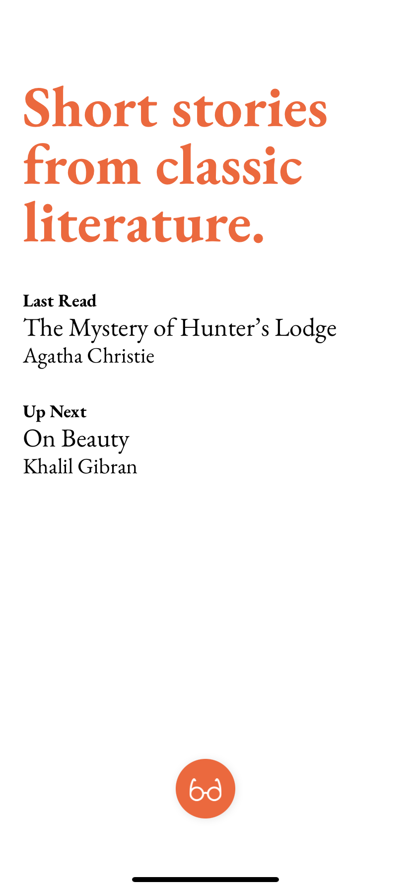
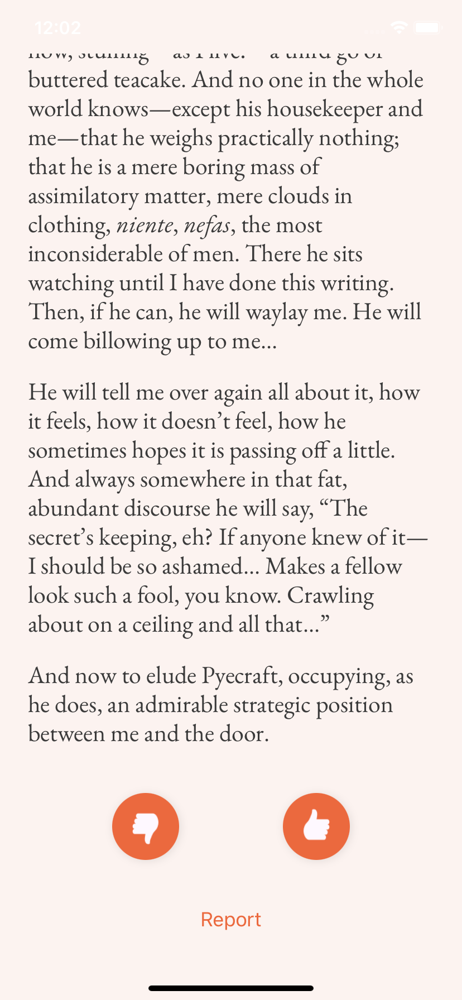

We've made an app that we hope will get you reading.
Yarn brings you one short story at a time from our collection of classic literature. No choosing, no skipping. All you have to do is read.
Oh, and let us know what you thought of the story when you're done.
Where to find it
It's available now, for free from the Apple App Store for iOS and the Google Play Store for Android.
🍏 Yarn
🤖 Yarn
Why we bothered
One story at a time
If your attention span is anything like ours, it's short. Social media, rolling news and being under the constant bombardment of ads probably has something to do with it. Our theory1 is that by giving ourselves (and you) a single story to read at any one time, we can hone our withering attention spans at something that actually matters – exploring the human condition through the medium of stories.
Giving our community a personalised experience
When you're done with a story you submit a (totally anonymous!) preference. This let's us do two things. Firstly, we can use these to improve the experience for everyone in our community of readers by separating the wheat from the chaff. Secondly, in the near-future, we will tailor the stories you recieve to try and balance what you like with the novelty of stories that lie just outside your usual taste.
Using stories sourced from copyright-free materials
People have been writing great literature since humans learnt to encode their stories into symbols. Not long after that2, copyright law was invented as a method by which those who wrote popular works could be rewarded.
Luckily, copyright expires. That means that every year there are ever more written works entering the public domain. There are great efforts (like Project Gutenberg) undertaken to bring these works to the masses, and we hope that our own contibution can help to this end.
Yarn stands on the shoulders of giants, and we hope that our niche offering can help people read by presenting them in an attractive and captivating format.
Presented in a format with fewer distractions
Our design philosophy, if you can call it that, is to keep things as simple, accessible, and beautiful as possible. Reading should be enjoyable for everyone.